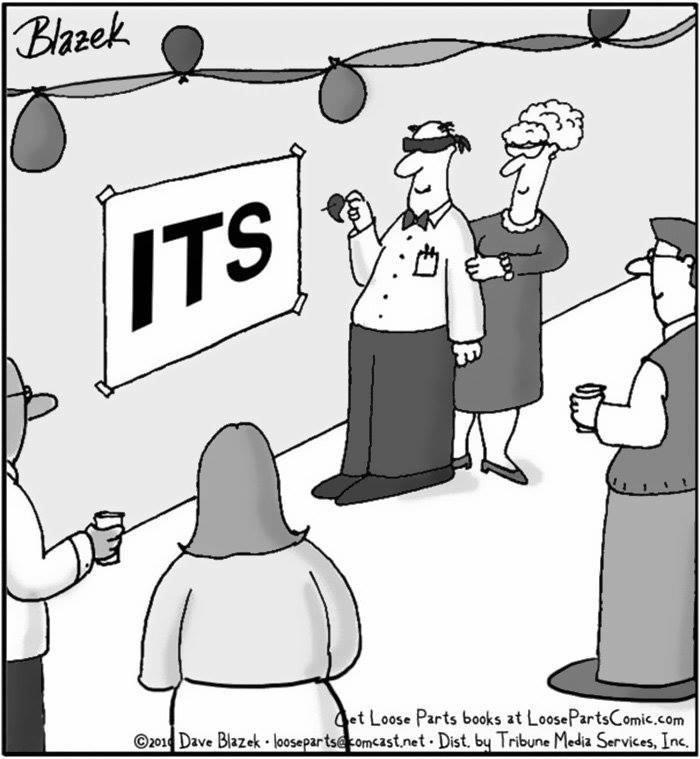

Add an an apostrope-s to singular nouns, like so:
Names that end in s can be shortened, i.e. "James' new album." Compound nouns get an 's at the end of the word, i.e. "my sister-in-law's car."
If you remember nothing else, this type of question is guaranteed to show up on the ACT/SAT!
"It's" is a contraction for "it is," so we need a different option than Choice A. Test makers are picky about matching nouns and pronouns in number, so the singular "elephant calf" doesn't match up with the plural "their" offered by Choice D.
Choice B is a trap. It's a made up word!
Choice C is the way to go - "its" is the correct singular possessive pronoun.
CORRECT! If you remember nothing else, this type of question is guaranteed to show up on the ACT/SAT!
Choice C is the way to go - "its" is the correct singular possessive pronoun.
To show possession by more than one person, make the noun plural, then add the apostrophe. The last two examples are irregular; just be mindful of those words that do more than add an s at the end when they become plural!
In the case of collective nouns like group, family, team, class, and school, you treat them as one entity (that happens to have many people). Collective nouns get an apostrophe-s.
Wouldn't, couldn't, shouldn't, didn't, don't, wasn't, won't, weren't, hadn't, it's...
Contractions are shortened versions of words. In English, apostrophes usually stand in for omitted vowels. Wouldn't = would not.
Just make sure you're putting the apostrophe in the right place! Usually, the test makers are checking to see if you know the difference between the contraction it's (it is) and its (the singular possessive pronoun).
